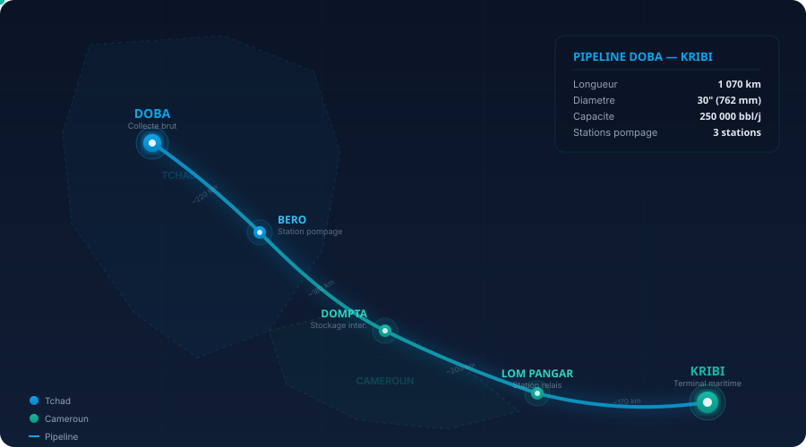

Le maillon
stratégique.
Du puits au terminal d'export — nous opérons les pipelines, installations de stockage et systèmes de comptage qui assurent le flux continu et sécurisé des hydrocarbures à travers le Tchad.
Connecter la production au marché
EnerTchad Intermédiaire opère les infrastructures critiques reliant la production amont à la distribution aval — pipelines, terminaux, métrologie et logistique.
Transport par pipeline
1 070 km de pipeline opérés de Doba au terminal d'export de Kribi, avec 4 stations de pompage et surveillance SCADA temps réel.
Stockage stratégique
6 sites de stockage d'une capacité totale de 2,8 millions de barils, assurant un mois d'autonomie nationale d'approvisionnement.
Métrologie fiscale
Systèmes de comptage certifiés OIML à chaque point de transfert de garde — terminaux de chargement, jonctions pipeline et installations d'export.
Intégrité & HSE
Gestion de l'intégrité pipeline (raclage, suivi corrosion, protection cathodique) avec culture sécurité zéro-tolérance et intervention d'urgence 24/7.
Huit piliers opérationnels
De la collecte brut dans le bassin de Doba au terminal d'export maritime — une chaîne intégrée d'infrastructures critiques.
Transport Pipeline
Pipeline d'export de 1 070 km, diamètre 30" (760 mm), 48 vannes de sectionnement, 3 stations de pompage (Komé, Dompta, Belabo). Pigging bimensuel, inspections ILI annuelles, protection cathodique continue. FSO Komé Kribi 1 (2,4M bbl, 357 000 tpl) ancré à 12 km au large, pipeline sous-marin de 22 km.
API 5L X60Collecte Brut
350+ km de conduites acier/composite, 8 manifolds multi-puits, 3 stations de séparation gaz-pétrole-eau. Connecte 120+ puits à l'usine de traitement central (CPF).
120+ puitsStockage & Terminaux
6 parcs de stockage, 2,8M bbl de capacité combinée. Bacs de sédimentation avec moniteurs niveau/densité, relevés chromatographiques quotidiens, 4 stations de repompage. 99,5 % disponibilité — Doba, Béro, Komé, stations de pompage et terminal FSO Kribi.
2.8M bblComptage & Metering
3 débitmètres Coriolis en redondance selon API MPMS Ch. 5. Calibration annuelle par labo accrédité, ±0,1 % de précision. Transfert de garde aux points d'entrée/sortie pipeline, terminaux et installations d'export.
±0.1 %SCADA & Monitoring
Contrôle supervisé et acquisition de données temps réel sur toutes les sections pipeline avec détection de fuites, suivi de pression et contrôle automatisé des vannes.
24/7Gestion Intégrité
Inspection en ligne (raclage intelligent), protection cathodique, suivi corrosion et maintenance prédictive par analyse des données ILI.
Smart PiggingTransport Routier
Flotte de 60+ camions-citernes pour la distribution secondaire des terminaux aux dépôts et les opérations de bypass d'urgence.
60+ citernesHSE & Urgence
Culture sécurité zéro-tolérance avec équipes d'intervention d'urgence dédiées, équipements de confinement des déversements et programmes HSE continus.
Zéro incidentBassins de production connectés au pipeline
Depuis 5 zones de production, le brut circule via 350+ km de conduites de collecte, 8 manifolds et 3 stations de séparation vers le hub de Doba — porte d'entrée du pipeline d'export COTCO de 1 070 km.
Komé · Miandoum · Bolobo
SHTCluster de production principal du bassin de Doba. Le brut converge au manifold de Komé avant injection dans le pipeline COTCO via la station de pompage PS1. Séparation triphasique, traitement d'eau et installation de réduction du torchage.
Mangara · Badila · Krim
PerencoChamps relancés après la sortie de Glencore en juillet 2022. Production restaurée à 18 000+ bbl/jour sur trois champs avec campagne active de 12+ puits. Connectés via conduites de collecte dédiées au système de manifolds de Doba.
ORYX — Bassin de Bongor
OPICBlocs Mouroumar, Benoy, Mbaikoro et Benoy-Ouest opérés par la filiale de CPC Taiwan. 17 puits de production avec 7 puits d'injection d'eau pour maintien de pression. Connecté au hub de Doba via le réseau secondaire de collecte.
Bloc H — Bassin de Salamat
CNPCConcession majeure avec 79 blocs faillés dans le bassin de Salamat. CNPC opère conjointement avec SHT, alimentant la raffinerie de Djarmaya (20 000 bbl/j) et acheminant le brut d'export vers le pipeline COTCO via le réseau de collecte de Doba.
Moundouli · Nya · Sédigui
SHTChamps secondaires dans la zone élargie de Doba. Production à volume réduit alimentant le système principal de collecte via des manifolds intermédiaires. Sédigui est un champ ancien sous opérations de récupération assistée.
Hub Doba — Usine de Traitement Central
Tous les bassins de production convergent vers le CPF de Doba : séparation triphasique, déshydratation, stabilisation et comptage fiscal avant injection dans le pipeline d'export COTCO de 1 070 km vers Kribi.
Doba — Kribi — Atlantique : 1 070 km
Du gisement au terminal flottant FSO sur l'océan Atlantique. L'oléoduc d'export Tchad-Cameroun, opéré par COTCO, traverse 170 km au Tchad et 904 km au Cameroun. Tubes de 760 mm de diamètre, enfouis à 1 m minimum, protégés par 48 vannes de sectionnement et un système de protection cathodique continue. En service depuis octobre 2003.

FSO Komé Kribi 1 — Terminal Atlantique
ULCC converti de 357 000 dwt, ancré en permanence à 12 km au large de Kribi par un système tower yoke mooring (un des plus grands au monde, conçu par SOFEC/MODEC). Pipeline sous-marin de 30" sur 22 km. Ballasts séparés empêchant le mélange eau/brut. Premier chargement le 3 octobre 2003. Opéré par COTCO.
Producteurs connectés au pipeline Doba — Kribi
Le pipeline COTCO est l'artère d'export de tous les opérateurs majeurs du bassin de Doba. Cinq producteurs acheminent leur brut via cette infrastructure de 1 070 km jusqu'au FSO Kribi sur l'Atlantique.
Compagnie nationale détenant 40% de TOTCO (opérateur du pipeline, section tchadienne). A acquis les actifs Petronas en mai 2023 et nationalisé les actifs Esso/Savannah. Objectif : 68 000 bbl/jour de production nationale.
Opérateur international majeur sur le Bloc H avec 79 blocs faillés. Co-entreprise avec SHT sur la raffinerie de Djarmaya (20 000 bbl/j) près de N'Djamena. Opère également le pipeline Niger-Bénin (1 950 km) depuis Agadem.
A acquis les intérêts PetroChad Mangara de Glencore en juillet 2022. A relancé la production sur des champs fermés, atteignant 18 000+ bbl/jour sur Mangara, Badila et Krim. Campagne de forage active avec 12+ puits.
Filiale de CPC Corporation (Taïwan). Opère le développement pétrolier ORYX (blocs Mouroumar, Benoy, Mbaikoro, Benoy-ouest) avec 17 puits de production et 7 puits d'injection. ~3 300 bbl/jour de capacité.
Le Tchad, hub énergétique stratégique d'Afrique Centrale
La position centrale du Tchad en fait le carrefour naturel des corridors énergétiques d'Afrique Centrale et de l'Ouest. Des interconnexions pipeline (CAPS, Soudan du Sud, Centrafrique) au gazoduc transsaharien de 20 milliards $ vers l'Europe, en passant par l'expansion du raffinage — le Tchad évolue de simple corridor de transit vers un hub énergétique continental.
CAPS — Central Africa Pipeline System
Le projet CAPS vise à connecter les infrastructures pétrolières d'Afrique Centrale en un réseau intégré de pipelines. Grâce à sa position au carrefour du Sahel et de l'Afrique Centrale, le Tchad devient le pivot naturel — connectant le Niger (Agadem), le Tchad (Doba, Bongor), le Cameroun (Kribi), le Soudan du Sud (Paloich), et offrant une route alternative pour les réserves du Darfour soudanais (5-15 Mrd bbl, Bloc 6 CNPC à la frontière). Avec Port-Soudan contesté depuis 2023, le hub de Doba offre un corridor alternatif naturel.
Pipeline Niger — Bénin
Le plus long pipeline d'Afrique (1 950 km). Relie les champs d'Agadem au terminal offshore de Sèmè-Kpodji. Construit par CNPC, opérationnel depuis mai 2024 avec 110 000 bbl/jour de capacité. Plus de 14 millions de barils déjà exportés.
Interconnexion Agadem — Doba
Pipeline de 600 km reliant le bassin d'Agadem (Niger) au hub de Doba, offrant un second accès à l'Atlantique via le pipeline Tchad-Cameroun et le FSO Kribi. Initialement planifié par CNPC, le projet a été relancé en juin 2024 par le gouvernement nigérien comme route d'export alternative.
Raffinerie Djarmaya — Pipeline Bongor
Seule raffinerie du Tchad, à 40 km au nord de N'Djamena. Détenue 60 % CNPC, 40 % SHT, opérée par SRN SA. Connectée via le pipeline Rônier–Djarmaya de 311 km au bassin de Bongor (champs Rônier, Mimosa, Koudalwa). Capacité de 20 000 bbl/j, actuellement ~14 000 bbl/j en raison de la qualité du brut. Produit essence, diesel, fioul, GPL et polypropylène. Nouvel accord COSA signé en sept. 2025 (3 ans) pour améliorer l'approvisionnement et la qualité du brut. CNPC prévoit d'étendre la raffinerie et d'en construire une seconde dans l'est du Tchad.
Connexion au WAGP
Le West African Gas Pipeline (681 km) relie déjà le Nigeria au Bénin, Togo et Ghana. L'interconnexion du réseau CAPS avec le corridor WAGP via le Bénin ouvrirait un accès aux marchés d'Afrique de l'Ouest et aux hubs de raffinage nigérians, complétant le maillage continental.
Gazoduc Nigeria — Tchad — Libye — Europe
Le gazoduc transsaharien de 20 milliards $ transportera 30 milliards m³/an depuis le Nigeria, traversant le Tchad et la Libye vers l'Europe via la Sicile. Des négociations actives ont eu lieu à Londres (mars 2026) avec le consortium Netoil. Le Tchad devient un hub de transit clé, générant des revenus de transit et permettant la monétisation des réserves gazières domestiques le long du corridor.
Raccordement Centrafrique — Doba
La Centrafrique a lancé son premier appel d'offres pétrolier en 2024 (8 blocs, 31 883 km²), avec exploration dans le bassin Doba-Doseo-Salamat à cheval sur la frontière RCA-Tchad. Toute production future de la RCA se raccorderait naturellement au pipeline COTCO via le hub de Doba — ajoutant de nouveaux volumes au corridor d'export existant.
Expansion Capacité Raffinage
Avec une capacité de raffinage de 20 000 bbl/j (Djarmaya, co-entreprise CNPC-SHT) contre 137 000 bbl/j de production, le Tchad ne capture que 15% de la valeur localement. Des plans d'expansion en discussion augmenteraient la capacité, réduiraient les importations de carburant et positionneraient le corridor Doba comme hub de transformation — pas seulement un pipeline de transit.
Connexion Soudan du Sud — Doba
Le Soudan du Sud dispose de 3,5 milliards de barils de réserves prouvées mais dépend d'une seule route d'export via le Soudan (pipeline GNPOC vers Port-Soudan). Un pipeline alternatif (~800 km) de Paloich/Haut-Nil vers le hub de Doba offrirait une seconde route d'export Atlantique via le FSO Kribi, contournant les risques de transit soudanais. La position centrale du Tchad rend ce corridor géographiquement viable.
Corridor Soudan (Darfour) — Doba
La région du Darfour au Soudan recèle un potentiel estimé de 5 à 15 milliards de barils dans cinq bassins, dont le Bloc 6 de CNPC chevauche la frontière tchadienne. La guerre civile en cours (depuis avril 2023) a dévasté l'infrastructure pétrolière soudanaise — contraction de 70%, ruptures de pipeline et 5 Mrd$ de dommages. Port-Soudan reste contesté. Le pipeline COTCO existant offre une route d'export alternative naturelle pour la future production du Darfour, positionnant le hub de Doba comme alternative stratégique au corridor de la Mer Rouge perturbé.
Le Tchad, carrefour continental
Frontalier de 6 pays (Libye, Soudan, Centrafrique, Cameroun, Nigeria, Niger), le Tchad est le seul pays à pouvoir relier les corridors pétroliers du Sahel, de l'Afrique Centrale et du Golfe de Guinée. Avec le Soudan du Sud et les réserves du Darfour, cela ouvre 8 connexions pipeline potentielles — un hub de transit inégalé positionnant EnerTchad comme opérateur stratégique de l'interconnexion africaine.
Ingénierie pipeline, du design à l'intégrité
EnerTech est la filiale spécialisée d'EnerTchad en ingénierie, technologie et R&D. Nos ingénieurs pipeline couvrent le cycle de vie complet — conception hydraulique, supervision de construction, intégration SCADA, gestion d'intégrité et décommissionnement.
SCADA & Automatisation Pipeline
Contrôle supervisé temps réel sur 1 070 km : 48 vannes de sectionnement automatisées, 3 automates de stations de pompage (Komé, Dompta, Belabo), télémétrie RTU à intervalles de 5 secondes. Détection de fuites par onde de pression négative (CPM) avec précision de localisation à 500 m.
Gestion Intégrité & ILI
Raclage intelligent : outils ILI MFL et UT détectant corrosion, fissures et anomalies géométriques. Campagnes annuelles avec base d'anomalies géoréférencée. Évaluation directe (ECDA/ICDA) sur sections non raclables. Aptitude au service selon API 579-1.
Protection Cathodique & Corrosion
Système CP à courant imposé sur 1 070 km. Suivi du potentiel tube-sol via 200+ stations de test. CPCM lors des passages ILI. Monitoring par coupons de corrosion, injection d'inhibiteurs et programmes biocides.
Métrologie Fiscale & Custody Transfer
Débitmètres Coriolis en triple redondance à Komé, Kribi et FSO. Calibration par boucle étalon. Enregistreurs inviolables, analyse chromatographique quotidienne. Audits custody transfer trimestriels.
Modélisation Hydraulique & Flow Assurance
Simulation hydraulique transitoire (OLGA/Synergi) pour analyse de surpression et coups de bélier. Prédiction des dépôts de paraffine (point d'écoulement 33°C). Injection DRA pour optimiser le débit. Profilage thermique.
Conception & Construction Pipeline
FEED et ingénierie détaillée : sélection tracé (GIS/LiDAR), HDD aux traversées. Spécification API 5L X60/X70. Études HAZOP/SIL. Supervision : soudage (API 1104), CND, essais hydrostatiques à 1,25× MAOP.
Ingénierie Terminal & Marine
FSO Komé Kribi 1 : amarrage bouée CALM, intégrité du pipeline sous-marin 22 km. Ingénierie parcs de stockage 6 sites (2,8M bbl) : instrumentation, anti-incendie, confinement secondaire.
Emprise Pipeline & Monitoring Environnemental
Inspection aérienne et par drones de l'emprise, détection d'empiétement. Intervention déversements : barrages, digues, bioremédiation. Monitoring trimestriel des eaux souterraines. Conformité IFC PS 1-8.
L'ossature technologique de l'excellence pipeline
Des salles de contrôle aux capteurs de terrain, EnerTech déploie un écosystème numérique intégré conçu pour les opérations pipeline — temps réel, sécurisé, prédictif.
DCS & SCADA Pipeline
Système de contrôle distribué pour 3 stations de pompage avec automates redondants. SCADA intégrant 48 actionneurs de vannes, transmetteurs pression/température et calculateurs de débit.
IEC 61131 · OPC UACybersécurité OT
Segmentation réseau OT IEC 62443 niveau 3. SOC dédié SCADA 24/7. Isolation VLAN, MFA, communications terrain AES-256.
IEC 62443 · SOC 24/7IA & Maintenance Prédictive
Modèles ML sur 20+ ans de données ILI/SCADA. Prédiction de corrosion, alertes dégradation CP, prévision défaillance paliers 7-14 jours à l'avance.
-35% Downtime · ML PipelineJumeau Numérique Hydraulique
Réplique numérique 1:1 de 1 070 km modélisant pression, débit, température, paraffine en temps réel. Simulation de scénarios lots et ESD.
OLGA · Synergi · Real-TimeDrones & Surveillance Emprise
Hexacoptères LiDAR pour inspection emprise. Thermographie IR, détection fuites. Monitoring IA empiétement. Survol mensuel 1 070 km.
LiDAR · IR · IA VisionRéseau Capteurs IoT
800+ capteurs terrain : pression, température, vibration, cellules CP. LTE-M/LoRaWAN avec edge computing par station.
800+ Sensors · Edge ComputingBig Data & Analytique Pipeline
Data lake : anomalies ILI, historien SCADA, logs comptage, monitoring CP. Dashboards KPI temps réel. Gestion intégrité GIS risk-based.
GIS · Risk-Based · Data LakeLabo R&D — Innovation Pipeline
Manchons composites, DTS fibre optique, agents DRA biosourcés, robots d'inspection autonomes. Partenariats IFP et Polytechnique N'Djamena.
R&D · Partenariats · InnovationUne flotte conçue pour la continuité
Camions-citernes, véhicules de maintenance et unités d'intervention d'urgence — tous géolocalisés et maintenus aux plus hauts standards de sécurité.
Camions-citernes
Citernes certifiées MC 306/DOT 407 pour distribution secondaire et opérations de bypass d'urgence.
60+Unités Maintenance
Unités mobiles de soudure, raclage, réparation de vannes et protection cathodique déployées le long du corridor pipeline.
25Intervention Urgence
Véhicules d'intervention rapide anti-déversement, unités anti-incendie et ambulances MEDEVAC le long de toutes les sections pipeline.
15Un leadership expérimenté
Une équipe de professionnels intermédiaires chevronnés avec des décennies d'expérience cumulée en opérations pipeline, gestion de terminaux et HSE en Afrique.
Directeur Général
Opérations Pipeline & TransportDir. Opérations
Opérations Terrain & MaintenanceDir. HSE
Santé, Sécurité & EnvironnementDir. SCADA
Systèmes de Contrôle & MonitoringESG au cœur de Intermédiaire
Gestion environnementale, responsabilité sociale et gouvernance opérationnelle sur 1 070 km d'infrastructure pipeline.
Bioremédiation de l'emprise pipeline
Remédiation complète des hydrocarbures sur corridor 1 070 km
Monitoring piézométrique continu
Surveillance piézométrique continue des nappes phréatiques
Programme zéro torchage
Récupération gaz pour électrification locale
Certifications ISO & normes
Conformité aux normes internationales
Emploi local direct
Recrutement local majoritaire dans la région du Tchad
Programme de formation continue
Formation technique continue pour tous les employés
Maintenance d'infrastructures
Entretien des pistes communautaires le long de l'emprise
Partenariats santé
Cliniques partenaires dans les zones traversées
Comité ESG & Reporting
Comité ESG trimestriel avec reporting au CA
Publication rapport annuel
Rapport de durabilité annuel complet
Conformité EITI
Initiative pour la Transparence des Industries Extractives
Politique anti-corruption
Politique anti-corruption et éthique des affaires
Services HSE Pipeline & Infrastructure
EnerTchad Intermédiaire propose des services HSE spécialisés pour les opérateurs de pipelines, terminaux et infrastructures critiques.
Inspection intégrité pipeline
ILI (In-Line Inspection), smart pigging, détection corrosion, évaluation conformité API 570/ASME B31.4.
Formation HSE terrain
2 400+ formés — Sécurité pipeline, intervention d'urgence, travaux en tranchée, espace confiné, habilitations ATEX.
Plan d'urgence & simulation
Élaboration ERP pipeline, exercices terrain (rupture, fuite, incendie), coordination avec Protection Civile et communautés riveraines.
Monitoring environnemental
85 stations — Surveillance piézométrique, qualité air/eau/sol, rapports IFC PS 1-8, suivi biodiversité corridor.
Gestion déversements
<2h intervention — Équipements spill containment, bioremédiation des sols, nettoyage pipeline, restauration sites.
Audit & Certification
Accompagnement ISO 45001, ISO 14001, API 1160. Gap analysis, roadmap conformité, audit blanc pré-certification.
Parlons intermédiaire
Projets d'interconnexion pipeline, demandes de capacité de stockage, métrologie de transfert de garde — notre équipe est prête à discuter de vos besoins.
Message Envoyé !
Merci de nous avoir contacté. Notre équipe vous répondra sous 24 heures.
Des projets qui prouvent notre expertise
Des décennies d'opérations pipeline résumées en résultats mesurables à travers l'Afrique et le Bassin tchadien.
Campagne ILI — Doba-Kribi 2025
Inspection MFL+UT en ligne sur 1 070 km avec taux de détection d'anomalies de 98,7 %. 142 défauts critiques identifiés et réparés en 90 jours.
Modernisation SCADA — Phase II
Migration Modbus RTU vers architecture OPC UA. Intégration de 48 actionneurs avec backbone fibre redondant. Disponibilité améliorée de 97,2 % à 99,97 %.
Bioremédiation Emprise — Corridor Moundou
Restauration complète de 12 km de corridor affecté par contamination historique. Monitoring piézométrique : 99,2 % d'élimination des hydrocarbures en 18 mois.
Rejoignez l'équipe qui transporte le pétrole du Tchad
EnerTchad Intermédiaire recrute des professionnels passionnés, prêts à relever les défis des opérations pipeline en Afrique.
Pourquoi nous rejoindre ?
Travaillez sur l'un des systèmes pipeline les plus critiques d'Afrique. Bénéficiez d'une exposition aux standards d'ingénierie de classe mondiale (API, ASME, IEC) tout en contribuant à l'indépendance énergétique du Tchad.
Documentation & médiathèque
Rapports techniques, publications institutionnelles et ressources de formation pour nos partenaires et parties prenantes.
Rapports annuels
Performance opérationnelle, métriques ESG et faits financiers.
5Fiches techniques
Spécifications pipeline, systèmes de comptage et détails équipements CP.
12Vidéothèque
Prises de vue drone, campagnes ILI, timelapses construction et briefings sécurité.
8Presse & Actualités
Dernières nouvelles, communiqués et publications sectorielles sur EnerTchad.
15+